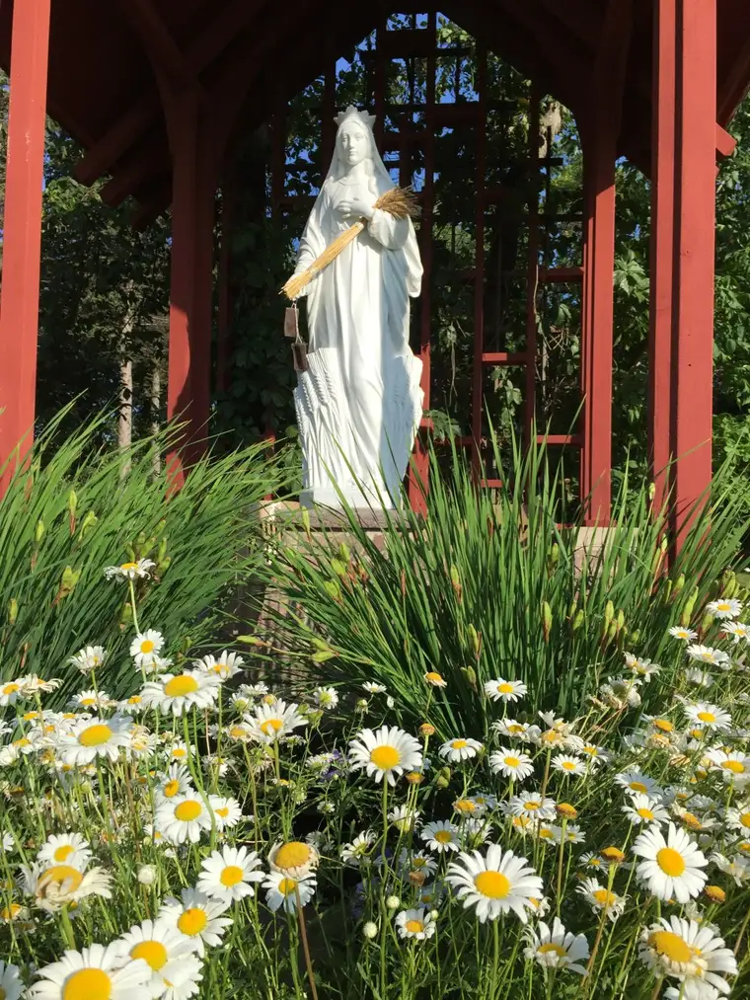
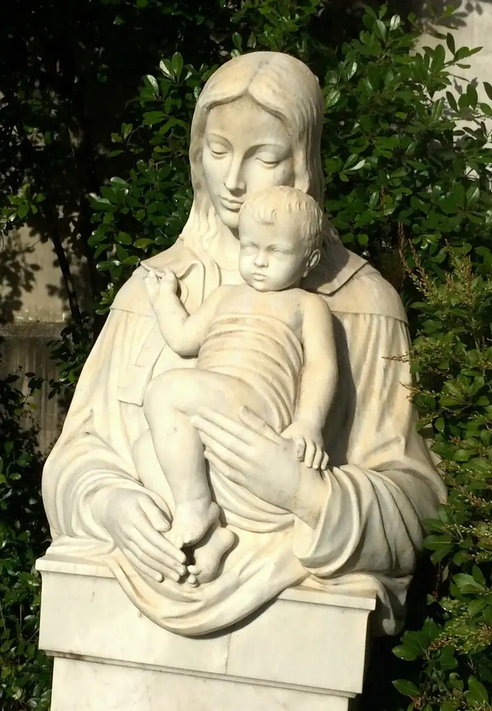
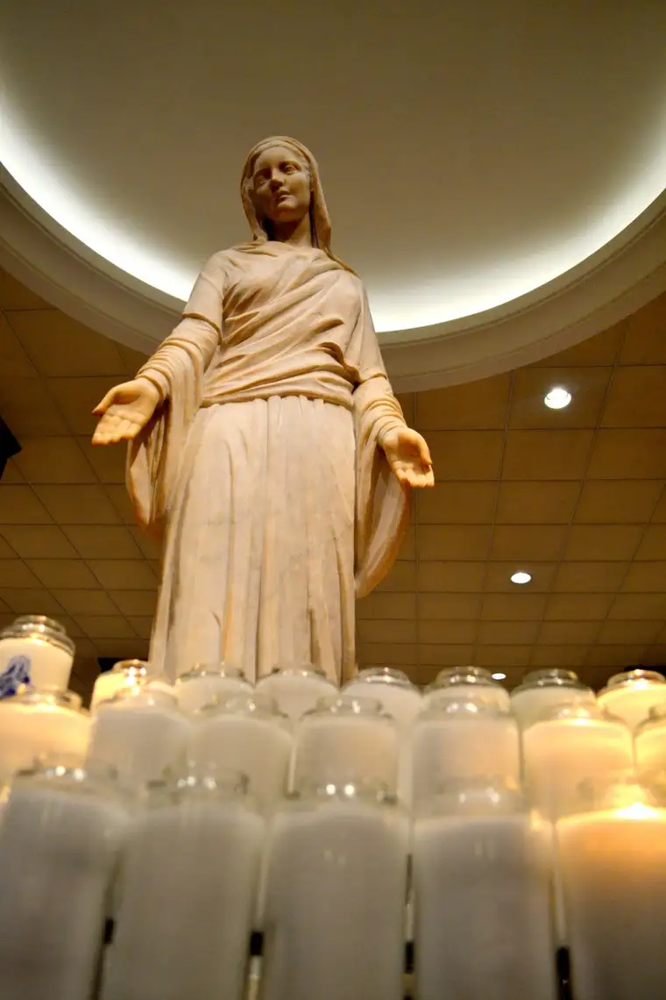
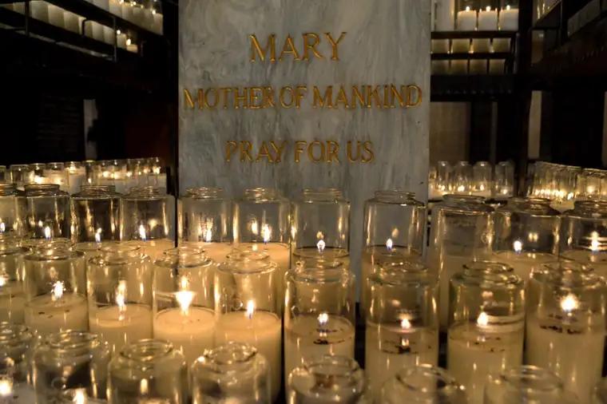
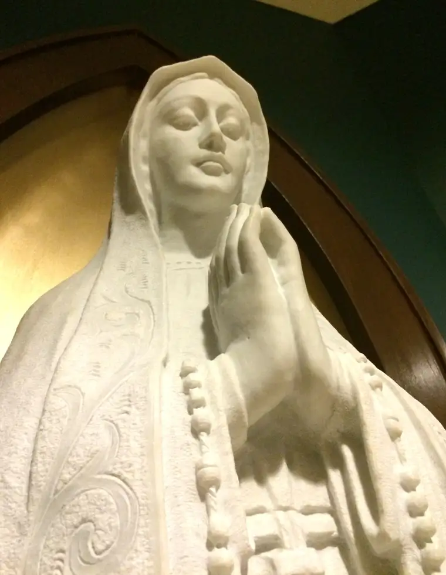

Oh how I love her!

And I know even by saying that, many will misunderstand, believing me to be emphasizing her too much. But that would be like saying that because I am so grateful for my mother, I don’t appreciate my father. Which isn’t true at all.
Jesus is Lord! I am composing this on the Feast of the Solemnity of Christ the King. I am so happy to proclaim that He alone is Lord, and Lord of all, forever!

But I am so grateful to be among the faithful who don’t minimize, but wholly embrace, Christ’s mother. Her presence, just knowing she was there and loved me, got me through my tumultuous teen years. In many ways, I owe her my life, for she brought me back to my senses and back to her Son, as she always does. She and her maternal touch gave me hope.

It’s about much more than sentiment and gratitude, though. It’s also about truth. And the truth of Mary is definitely one of the main reasons that, despite everything that is going on in the Church right now — things I never thought I’d witness in my lifetime — Our Blessed Mother remains one of the aspects of Catholicism that keeps me tethered to the bosom of the Church.
Recently, I heard a radio interview on Al Kresta’s show, “Kresta in the Afternoon.” Many distractions pulled me away while I tried listening live, so I went back later, found the interview on an online podcast, and took notes.
The interviewee, Dr. Brant Pitre, first shared a bit about his background. Though Catholic, he married a Baptist, and when his in-laws began questioning Marian doctrine of Catholicism, he didn’t have solid answers. Though he didn’t leave the faith, he said, he mostly abandoned his devotion to Mary during that time.
Then, while a student at the University of Notre Dame, he, along with his classmates, studied the Jewish roots of Mary, and Marian doctrine. It blew him away. Finally, he could explain why Catholics believe what we do about Mary, and how very Scriptural it is! However, it takes all of Scripture to understand, not just the New Testament. We cannot understand Mary properly — and the ancient Christian tradition that gave way to Catholic belief of her — without understanding Jewish history and the Old Testament. This aspect of our Christian faith, as ALL aspects, must be considered with Old and New testaments working in tandem; the old gives proper illumination to the new.
Petrie said that as he began his study on Mary, every book he read that rejected Catholic teaching on this topic would invariably ignore the Old Testament and would just look at what the New Testament said about Mary in isolation, “and certainly wouldn’t look at Old Testament pre-figurations and ancient Jewish traditions.”
“As I began to connect the dots between the Old and New testaments, it led me back to a robust devotion to Mary,” he added. “Around the world Christians recognize Jesus is the new Adam. It begs the very important question: if Jesus is the new Adam, who is the new Eve?…Adam doesn’t fall by himself but he falls with Eve; they cooperate in bringing about the fall of humanity.”


Petrie noted that in Gen. 3:15, we find “a prophecy in ancient Jewish tradition” that “was regarded as an oracle of the messiah, and of the mother of the messiah, that one day when the messiah would come, he would become the new Adam who would overthrow sin and death that the serpent had brought into the world…and his mother would be the new Eve figure…”
Intriguing, no?
He further said that when Jesus refers to his mother as “woman” and she invites him to perform his first sign, at Cana, it’s a parallel to when Eve, “the woman” in that chapter, invites Adam to commit his first sin. Jesus talks at Cana about the hour when he’s going to overthrow the devil, harkening back again to that Old Testament passage. “Even skeptical scholars…say yes, he’s saying she’s the woman of Genesis…in other words, the new Eve,” Petrie, pointed out.
In other words, Jesus referencing Mary as “woman” isn’t the put down many believe it to be; rather, it’s a sign of great respect. “It’s revealing to us her role in the history of salvation and the inauguration of the new creation,” he said. “She is the woman through whom the Messiah, the new Adam, has come into the world.”
This is key, he said. “The doctrine of Mary’s Immaculate Conception and sinlessness flows right out of the Scriptural depiction of her as the new Eve.”

Petrie added that in reading the writings of the ancient Christians, this belief in Mary as the new Eve was uncontested. Part of this goes back to the beginning, again back to Genesis, because: “When God created the first man and woman, they were not just created good but VERY good; in the state of what Catholics call the state of original holiness, or original righteousness.”
In other words, Petrie noted, “If the first Adam and Eve were created without sin, it makes sense that the new Adam, Jesus, and the new Eve, Mary, would also be conceived without sin.”
For clarification, he explained that the Immaculate Conception doesn’t mean Mary is super human or divine, but that we’re seeing a Biblical portrait being laid out with Mary as the new Eve — an improvement of the first Eve — and that it makes sense, in this light, why Mary would have been chosen, by GOD (mind you) to be preserved from original sin “by a special grace,” and who would retain this special grace throughout her life.
This in turn leads to the Marian belief of the Assumption — but I’ll stop while I’m ahead.
I hope, if you’re curious, you’ll jump back up to the link I embedded of that radio interview and take a listen. While I found it fascinating, I still come back around to the reality of how Mary has brought beauty, goodness, truth and faith into my own life. She brings a dimension to my faith that does nothing to detract from her Son, but in fact, illuminates him all the more. And I’m so grateful. There’s no better time than at Advent, the season we’ve just begun, to contemplate Our Blessed Mother, who gave us the Savior of the World.